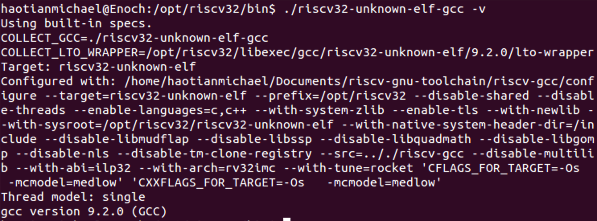
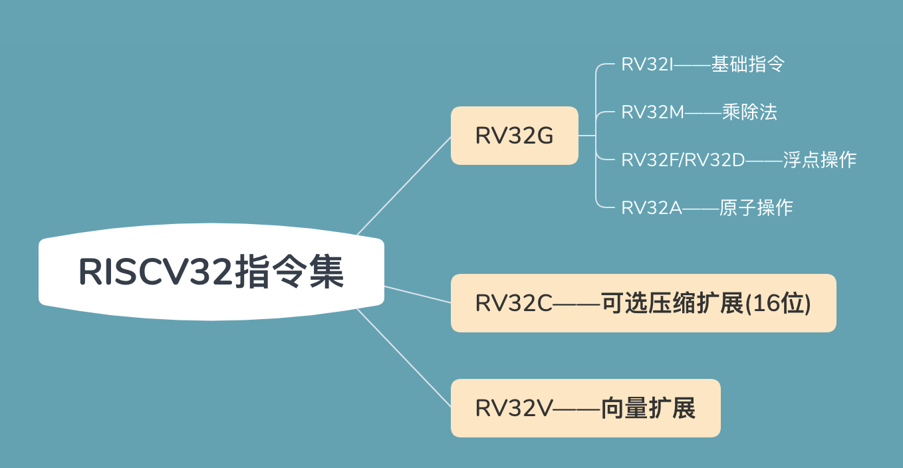

Absrtact
旨在x86平台上编译RISCV架构的可执行文件。
RISCV作为一款极具使命感的指令集，其软件栈也是非常完整的。交叉编译环境可以在这里下载。
交叉编译工具链包括:
GCC编译器- C运行库
Glibc:gnu旗下的库，作为linux的标准库和内核打交道Newlib： 在嵌入式中使用广泛Buntils二进制套件GDB调试器
不同版本的工具链
| Version | Note |
|---|---|
| Riscv-unknown-linux-gnu-gcc | 132位架构的2Linux版本 |
| Riscv-unknown-elf-gcc | 32位架构的非Linux版本 |
- 每个版本都有32位架构和64位架构，这里的位数和运行本机的字长无关，指的是没有通过
-march=和-mabi=选项指定RISCV架构的位宽 - Linux版本指的是该工具链使用Linux系统中运行的
Glibc作为C运行库——另外的个版本则使用Newlibc库
交叉编译选项
-march=
由于\(RISCV\)为模块化指令，该选项支持不同的模块化指令集组合,关于\(RISCV\)模块见后面的介绍:
rv32i[m][a][f[d]][c]rv32g[c]rv64i[m][a][f[d]][c]rv64g[c]
-mabi=
该选项选定了目标平台所支持的ABI函数调用:
ilp32，ilp32f，ilp32d32位架构(int-32位 long-32位 long long-64位)lp64，lp64f，lp64d64位架构(int-32位 long-64位)
后缀
| suffix | Note |
|---|---|
| -- | 使用浮点类型操作直接使用RISCV浮点指令进行支持，但是当浮点数作为函数参数进行传递时，无论是单精度还是双精度均需要存储器中的堆栈进行传递 |
| -f | 使用浮点类型操作直接使用RISCV浮点指令进行支持，但是当浮点数作为函数参数进行传递时，单精度通过寄存拿起传递，双精度通过内存堆栈传递 |
| -d | 使用浮点类型操作直接使用RISCV浮点指令进行支持，但是当浮点数作为函数参数进行传递时，单/双精度均可通过寄存器传递 |
只有-march=支持浮点扩展，(-mabi=)才允许加上f/d后缀以支持浮点运算。

RISCV汇编语言简介

总结
目前交叉编译平台主要有两部分:
riscv32-unknown-elf-gcc平台编译生成\(RISCV\)可执行文件，而qemu-riscv32平台运行RISCV可执行文件。
qemu是一款很强大的虚拟机，分为系统模式和用户模式，用户模式运行可执行文件，而系统模式模拟特定指令集从而运行操作系统镜像文件。